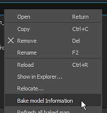
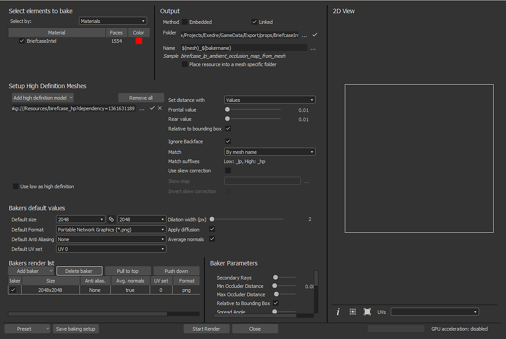
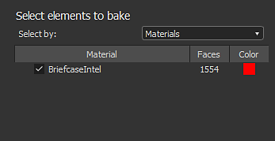
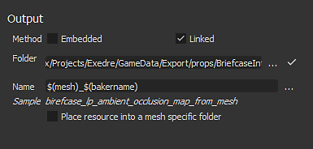
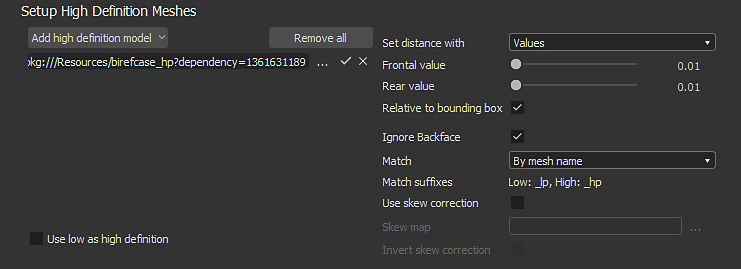
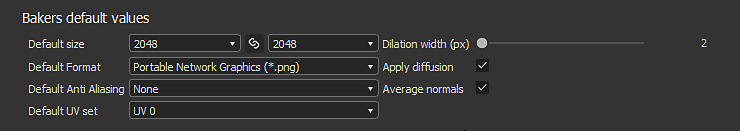
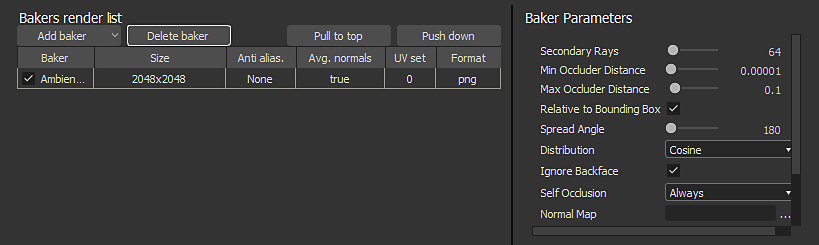

The baking window can be accessed via the mesh file in the Explorer window. Right-Click on the mesh name and choose "Bake Model Information" to open the baking window.

The baking window of is divided into several panels which are described below.

This panel controls which part of the low-poly mesh will be used to perform the baking.
This panel will list the geometry found inside the low-poly mesh file. By default the list is based on the individual materials found in the file, but it can be switched to sub-meshes instead when relevant. You can uncheck elements that should be ignored during the baking process.

This panel controls where the baked texture will be located.
| Parameter | Description |
|---|---|
| Method | Controls how the baked textures will be stored with the Substance package. Possible values:
|
| Folder | Location of the baked textures when saved. Click on three dots button to open a file dialog and choose the export folder. A check-mark will be visible on the right to indicate if the folder actually exist or not. |
| Name | Naming convention of the baked textures. Click on three dots button to open a dropdown and insert other placeholders (bakename, custom, material, mesh). |
| Sample | Simulate a filename to test the naming convention. |
| Place Resource Into a Mesh Specific Folder | If enabled, the baked textures will be saved inside a folder named as the mesh file. |

This panel controls the high-poly mesh list and the related settings. See the common parameters for more information.

See the common parameters for more information.

The baker is where you can choose which baked texture you want to generate. By default the list is empty.
Each baker in the inherit by default the Default Values (see above). The size (resolution) for example can be overridden by clicking on the cell on the line of the baker. This is true for the other settings on the line.
When clicking on a baker in the list, the Baker Parameters view will update with its specific parameters.
To learn more about the specific parameters, see: Bakers Settings.